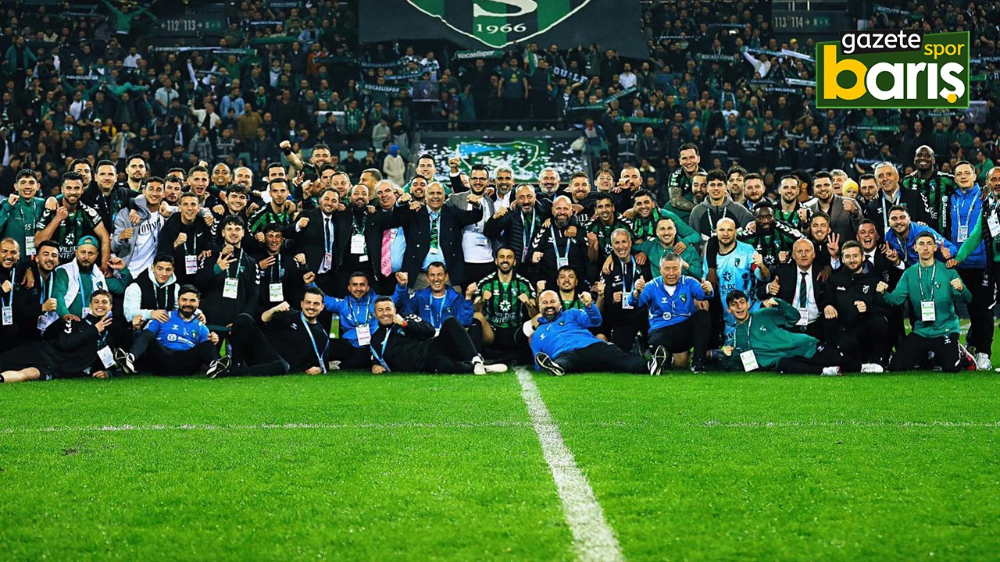
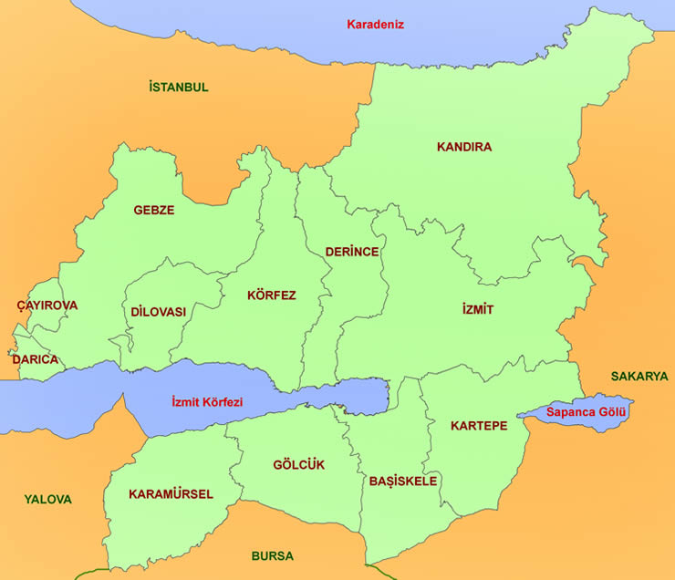
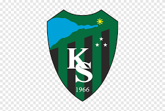
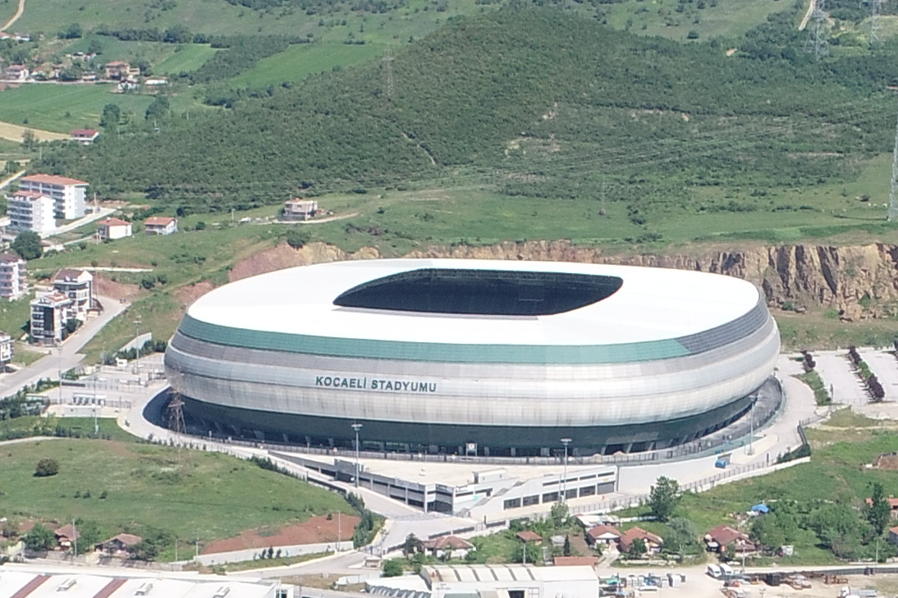

KOCAELİSPOR
"Şampiyonluk için saldır Kocaelispor!"
Tarihçe
Kocaelispor 24 Nisan 1966 tarihinde Baçspor, İzmit Gençlik ve Doğanspor takımlarının birleşmesiyle kuruldu.Altın dönemlerini 1991-2002 arasında yaşamış olan Kocaelispor günümüzde 1.Ligden Süperlig'e yükselmiştir.Kocaelispor'un kadın voleybol takımı ise şehri 1997 ile 2004 yılları arasında kesintisiz olarak Sultanlar Ligi'nde temsil etmiş ve 2004 yılında takımın ligden düşmesi sonucu şube kapatılmıştır.
1966 kadro:Avni Kalkavan, Metin Uzuner, Yılmaz Yetiştiren, Burhan Yılmaz, Ahmet Asena, Erol Akok, Recep Koçkar, Sümer Yüzer,Yıldırım Tonga, Ferruh Duygu, Naci, Kamil Bayrak, Ayhan Dönmez.
Günümüz kadro: HARUN TEKİN,MUHARREM CİNAN, JOSIP VUKOVIC,AARON APPINDANGOYE,PEDRO FILIPE BARBOSA MOREIRA, GIORGI BERIDZE,YUSUF CİHAT ÇELİK,AHMET SAĞAT,MIJO CAKTAS,TARKAN SERBEST,OĞULCAN ÇAĞLAYAN
Başarılar
-

- 2 Türkiye Kupası Şampiyonluk: 1996-97, 2001-02
- 4 1.Lig Şampiyonluğu: 1979-80, 1991-92, 2007-08, 2024-25
- 2.Lig Şampiyonluğu: 2022-23
- 2.Lig Play-Off Şampiyonluğu
- 3.Lig Şampiyonluğu: 2019-2020
- Bölgesel Amatör lig Şampiyonluk: 2015-2016
Renkler ve Sembol
Kocaelispor kurulurken Baçspor, İzmit Gençlik ve Doğanspor takımlarının yöneticileri kendi aralarında anlaşarak yeşil ve siyah renkleri benimsediler.Kocaeli sporun logosunda sembol olarak Kocaeli Körfezi kullanılmıştır.Kocaeli sporun simgesi olan hayvan başta yunus idi. Sonradan taraftarların duygularını yansıtmak için köpekbalığı simge hayvan olarak benimsenmiştir.
Takım Logosu
Stadyum
KocaeliSpor Stadı, Kapasite:34.829
